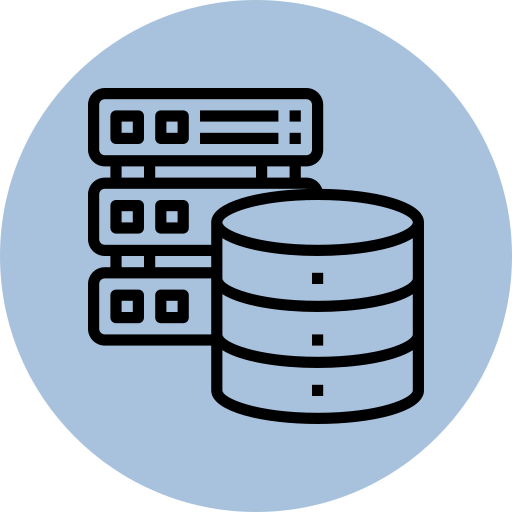
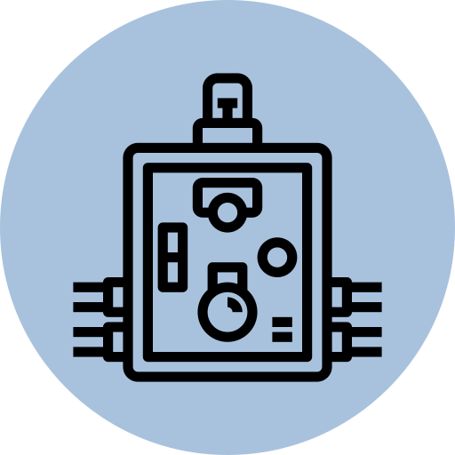
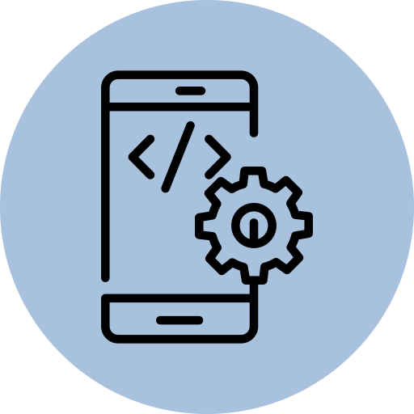
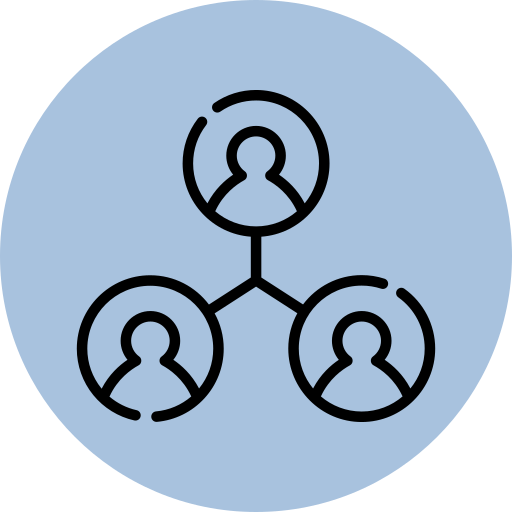

Computer Science
Faculty of science
What is computer science?
Knowing how to program is one essential part of the study of computer science.
But there's more to it, 'Solving Problems'. Computer scienctists design and analyze
algorithms
to solve programs and study the performance of computer hardware and
software.
You get to create your own world, and the only thing that limits what you can
do
are the capabilities of the machine and, more and more often these days,
your own abilities.
| First Year | ||
| Semester One | ||
| Course Code | Course Name | Credits |
| M1100 | Algebra | 6 Credits |
| M1101 | Analysis | 6 Credits |
| P1100 | Mechanics | 6 Credits |
| P1101 | Electricity and Magnitism | 6 Credits |
| S1101 | Statistics | 3 Credits |
| I1100 | Introduction to Informatics | 3 Credits |
| Semester Two | ||
| Course Code | Course Name | Credits |
| M1102 | Algebra 2 | 3 Credits |
| M1103 | Algebra 3 | 6 Credits |
| M1104 | Analysis 2 | 6 Credits |
| M1105 | Analysis 3 | 6 Credits |
| M1106 | Analysis 4 | 3 Credits |
| I1101 | Algorithms, Programming | 3 Credits |
| Second Year | ||
| Semester Three | ||
| Course Code | Course Name | Credits |
| I2202 | Computer Organization | 4 Credits |
| I2203 | Operating System 1 | 4 Credits |
| I2204 | Imperative Programming | 5 Credits |
| I2205 | Graphs | 3 Credits |
| S2250 | Statistics | 4 Credits |
| M2250 | Arithmetics in Z | 3 Credits |
| M2251(optional) | Matlab | 3 Credits |
| I2231(optional) | Operational Research | 3 Credits |
| I2232(optional) | Python | 3 Credits |
| Semester Four | ||
| Course Code | Course Name | Credits |
| I2206 | Data Structures | 3 Credits |
| I2207 | Computer Architecture | 6 Credits |
| I2208 | Network 1 | 6 Credits |
| I2209 | Logical Programming | 6 Credits |
| I2210 | Database 1 | 3 Credits |
| I2211 | Object Oriented Programming (Java) | 3 Credits |
| I2234(optional) | Image Processing | 3 Credits |
| I2233(optional) | Infographics | 3 Credits |
| Third Year | ||
| Semester Five | ||
| Course Code | Course Name | Credits |
| DHR300 | Human Rights | 3 Credits |
| I3301 | Software Engineering | 4 Credits, Lab |
| I3302 | PHP | 4 Credits, Lab |
| I3303 | OS 2 | 4 Credits, Lab |
| I3304 | Network 2 | 4 Credits, Lab |
| I3305 | Graphic interface | 3 Credits, Lab |
| I3306 | DataBase 2 | 3 Credits, Lab |
| I3350(optional) | Mobile application | 5 Credits, Lab |
| I3351(optional) | Administration Systems | 5 Credits, Lab |
| Semester Six | ||
| Course Code | Course Name | Credits |
| I3307 | Theory of Computation | 4 Credits, No Lab |
| I3308 | Project | 4 Credits , No Lab, No Sessions |
| I3330(optional) | IT Project Management | 3 Credits , Lab |
| I3331(optional) | Computers and Society | 3 Credits , Lab |
| I3332(optional) | Generation Programming Language | 3 Credits , Lab |
| I3333(optional) | Image Synthesis | 3 Credits , Lab |
| I3340(optional) | Parallel Programming l | 4 Credits , Lab |
| I3341(optional) | Advanced Algorithms | 4 Credits , Lab |
| I3342(optional) | Circuits Advanced Logic | 3 Credits , Lab |
| I3343(optional) | Enviroment and Pollution | 3 Credits , No Lab |
| I3344(optional) | Numerical Simulation and Modelling | 6 Credits , No Lab |
| L3300(optional) | Foreign Language | 3 Credits |
Job Opportunities

Database Administration

Hardware Engineer

Mobile App Developer

Network Architect


Software Developer
Software developers create software programs that allow users to perform specific tasks on various devices,such as computers or mobile devices. They are responsible for the entire development, testing, and maintenance of software.
According to the Bureau of Labor Statistics (BLS), software developers earned a median income of $107,510 in May 2019,
and employment was expected to grow by 22% from 2019 to 2029—much faster than average for all occupations.
Database Adminstartor
Database administrators analyze and evaluate the data needs of users.They develop and improve the data resources used to store and retrieve critical information.
They need the problem-solving skills of the computer science major to correct any malfunctions in databases
and to modify systems in line with the evolving needs of users. According to the BLS, database administrators earned
a median income of $93,750 in May 2019, and employment was expected to grow by 10% from 2019 to 2029,
which is faster than average.
Hardware Engineer
Computer hardware engineers are responsible for designing, developing, and testing computer components,such as circuit boards, routers, and memory devices. Computer hardware engineers need a combination of creativity and technical expertise.
They must be avid learners who stay on top of emerging trends in the field to create hardware that can accommodate the latest programs and applications.
Computer hardware engineers must have the perseverance to perform comprehensive tests of systems, again and again,
to ensure the hardware is functioning as it should. According to the BLS, computer hardware engineers earned a median income of $117,220 in May 2019, and employment was expected to grow by 2% from 2019 to 2029—slower than average.
Mobile App Developer
A mobile app developer is a software engineer who works primarily with mobile devices, creating,programming, testing, and maintaining apps and mobile platforms across devices like smartphones, tablets and laptops.
Network Architect
Computer network architects design, implement, and maintain networking and data communication systems,including local area networks, wide area networks, extranets, and intranets. They assess the needs of organizations for data sharing and communications.
Computer network architects also evaluate the products and services available in the marketplace.
Computer network architects test systems before they are implemented and resolve problems as they occur after the setup is in place.
Computer network architects need to have the analytical skills to evaluate computer networks.
According to the BLS, computer network architects earned a median income of $112,690 in May 2019,
and employment was expected to grow by 5% from 2019 to 2029—faster than average.
Web Development
Web development, also known as website development, refers to the tasks associated with creating, building, and maintaining websites and web applications that run online on a browser.It may, however, also include web design, web programming, and database management.
Cyber Security
Cyber Security study programmes teach you how to protect computer operating systems, networks, and data from cyber attacks.You'll learn how to monitor systems and mitigate threats when they happen.
This is an oversimplification of IT security degrees' curricula.
Information Technology
Information technology (IT) professionals are responsible for helping organizations maintain their digital infrastructure and providing troubleshooting assistance to technology consumers.IT employees are in demand to help others keep up with technological advances and security procedures.
DevOps
A DevOps engineer introduces processes, tools, and methodologies to balance needs throughout the software development life cycle, from coding and deployment, to maintenance and updates.Maybe you want to shift your career to DevOps, or train yourself to drive adoption within your company.
AI Engineer
AI engineers are responsible for developing new applications and systems that utilize AI to improve performance and efficiency,make better decisions, cut costs and increase profits.